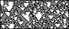

| Stephen Wolfram observed four classes of
CA behavior for
patterns growing from an initial random distribution of live and dead cells. |
| Class I: Homogeneous
Everything eventually dies (or eventually lives). Some initial transient behavior
usually precedes this final state. |
|
|
| Class II: Periodic
Perhaps after some initial transients, the pattern repeats itself exactly, in
space (horizontally), in time (vertically), or both. |
 |
|
|
| Class IV: Complex
Patterns grow in a complicated way, with both
local stable behavior (acting as memory) and long-range correlations (acting to transmit data).
In the first, the checkerboard background pattern is the memory; in the second it is the
background pattern of vertical lines. |
 |
|
|
|
| Class IV are the most interesting, and the most rare. Here is a
surprising new example. |
| Conway's Game of Life is a (two-dimensional)
Class IV CA: |
| * blocks are the local stable behavior, |
| * gliders give long-range correlations. |